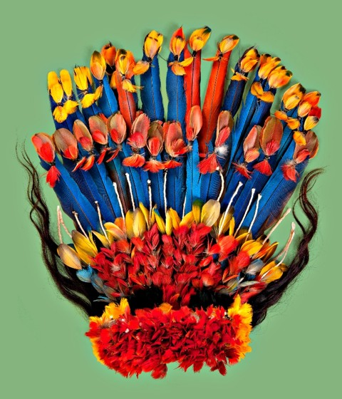
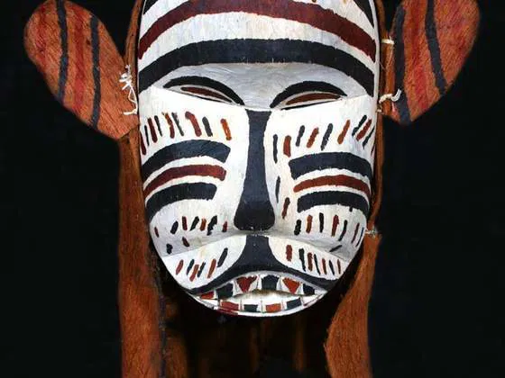
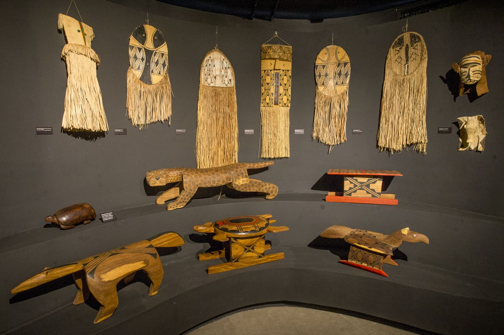

Sobre o tema
Arte Indígena do Paraná A arte indígena do Paraná é produzida por povos como os Kaingang, Guarani e Xetá. Ela inclui pinturas, cestarias, cerâmicas e artesanatos, com desenhos que representam a natureza, histórias e tradições. Essa arte ajuda a preservar a cultura e a identidade dos povos indígenas.

Contexto histórico
A arte indígena do Paraná existe há milhares de anos e faz parte da cultura dos povos originários, como Kaingang, Guarani e Xetá . Antes da chegada dos europeus, esses povos já produziam cerâmicas, cestarias, pinturas e outros objetos. Com o passar do tempo, enfrentaram a perda de territórios e mudanças em seus costumes, mas continuam preservando sua arte, cultura e tradições até hoje.

Importância cultural
A arte indígena do Paraná tem grande importância cultural, pois representa a história, os costumes, as crenças e a identidade dos povos indígenas que vivem no estado. Por meio de pinturas, grafismos, cerâmicas, cestarias e artesanatos, esses povos preservam conhecimentos que são passados de geração em geração. Além de ser uma forma de expressão artística, a arte indígena também está ligada à natureza e ao modo de vida de cada povo. Ela ajuda a manter vivas as tradições e a memória dos povos Kaingang, Guarani e Xetá. Valorizar essa arte é reconhecer a importância dos povos originários para a formação da cultura paranaense e brasileira. Por isso, conhecer e respeitar a arte indígena contribui para preservar a diversidade cultural, combater o preconceito e valorizar a história dos povos indígenas até os dias atuais.
